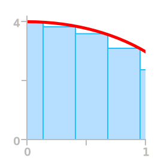
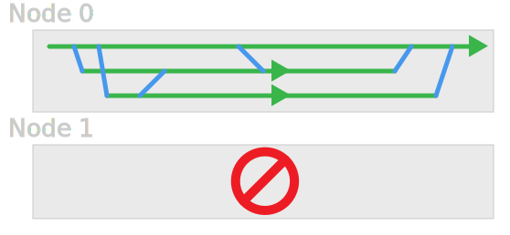
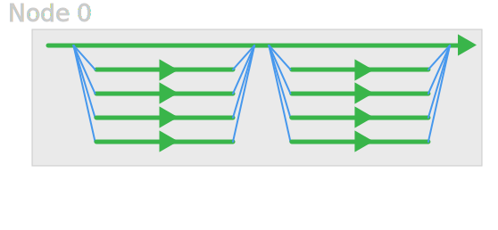
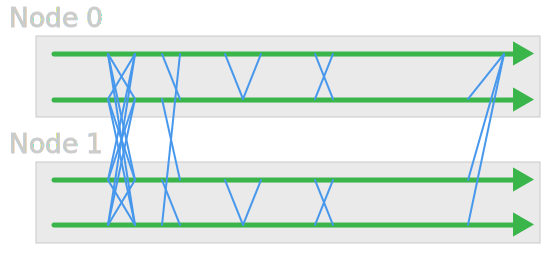

Close
Close

Legion Environment and Batch processing
A Simple Serial Job
calculate_pi - Calculates π by numerically integrating a curve.
\[\int_{0}^{1}\frac{4}{1+x^2}\text{d}x=\pi\]

Make a Copy
cd ~/Scratch
cp -r /shared/ucl/apps/examples/calculate_pi_dir ./
cd calculate_pi_dir
make
./calculate_pi
Job Script
#!/bin/bash -l
#$ -l h_rt=0:10:00
#$ -cwd
./calculate_pi
Job Script Defaults
#$ -l h_rt=0:15:00
#$ -l memory=1M
#$ -l tmpfs=10G
Queue Commands
|:---:|:---|
| qsub | submit job |
| qstat | view queue status and job info |
| qdel | stop & delete a job |
| qrsh | start an interactive session |
Submitting Jobs to the Queue
$ qsub submit.sh
Your job 3521045 ("submit.sh") has been submitted
$ qsub -terse submit.sh
3521045
Submitting Jobs to the Queue
Special comments are options for qsub
Check man qsub for full lists
Every cluster is a little different
Viewing Queue
$ qstat
job-ID prior name user state submit/start at
-----------------------------------------------------------------
3521045 0.00000 submit.sh ccaaxxx qw 01/14/2014 14:51:54
Job States
| Letter | Status |
|---|---|
q |
queued |
w |
waiting |
r |
running |
E |
error |
t |
transferring |
h |
held |
More Detailed Info
qstat -j 3521045
(gives a lot of output)
(Demo)
Job States - Errors
Most common problems:
- Working directory does not exist
- Working directory is not in
~/Scratch(and thus not writable)
Note that qstat -j cuts off the end of the error message - try e.g. qexplain 53893 to see full error message.
Removing Jobs
$ qdel 3521045
ccaaxxx has deleted job 3521045
- removes a queued job
- stops and removes a running job
Environment Within a Job
Exercise: Run the simple calculate_pi program as a job.
Exercise: To see what environment variables are set by the scheduler, try making a job script that runs env and puts the output in a file.
Exercise: sort the file, and compare it to your current environment to see what has changed.
Multithreaded Jobs

OpenMP

Make a Copy
- Go into your
Scratchdirectory - Make a copy of the
/shared/ucl/apps/examples/openmp_pi_dirdirectory - Build the program using
make, and try running it
Something Like
cd ~/Scratch
cp -r /shared/ucl/apps/examples/openmp_pi_dir ./
cd openmp_pi_dir
make
./openmp_pi
Requesting Threads
#$ -pe smp 4
- tells scheduler to find you 4 cores and allocate them to your job
- sets
OMP_NUM_THREADS=4to tell OpenMP you're only using 4 instead of all
Requesting Threads
#$ -pe smp 4
Exercise: Try modifying the script from before to run the new program.
Exercise: Run versions with 1, 2, 3, and 4 cores, and compare the timings.
Job Script
#!/bin/bash -l
#$ -l h_rt=0:10:00
#$ -pe smp 4
#$ -cwd
./openmp_pi
Multi-node Jobs
- Need some method to communicate over the network
- Most common is MPI
MPI

Make a Copy
cd ~/Scratch
cp -r /shared/ucl/apps/examples/mpi_pi_dir ./
cd mpi_pi_dir
make
./mpi_pi
# This won't always work on clusters
Requesting Multinode Jobs
#$ -pe mpi 36
- makes space for multi-node job
- creates variables and
machinesfile
Note that each requested core gets the amount of memory requested.
Job Script
#!/bin/bash -l
#$ -l h_rt=0:10:00
#$ -pe mpi 4
#$ -cwd
gerun ./mpi_pi
Exercise: Try modifying the script from before to run the new program, using 4, 8, 12, and 24 cores and the mpi parallel environment.
Requesting an Array Job
#$ -t 3 <- (only runs one job)
#$ -t 1-3
#$ -t 1-7:2
This queues an array of jobs which only differ in how the $SGE_TASK_ID variable is set.
Exercise: Try modifying the serial job script (calculate_pi) to run 4 jobs as an array.
Exercise: calculate_pi can take an argument to tell it how many steps to use. Try using this with $SGE_TASK_ID to run using 300, 500, and 700 steps.
Job Script
#!/bin/bash -l
#$ -l h_rt=0:10:00
#$ -t 1-4
#$ -cwd
./calculate_pi ${SGE_TASK_ID}0
Job Arrays and File Performance
The Lustre parallel filesystem performs worst when creating and writing to lots of little files.
Arrays of jobs often create files like this.
To help performance, run this type of job using the local storage on the node, and copy the files over when the job is complete.
Local Storage: $TMPDIR
Job Script
#!/bin/bash -l
#$ -l h_rt=0:10:00
#$ -t 1-40000
#$ -cwd
cd $TMPDIR
$HOME/my_programs/make_lots_of_files \
--some-option=$SGE_TASK_ID
Job Script
Then either:
cp * $SGE_WORK_DIR
or
cp -r $TMPDIR $SGE_WORK_DIR
Job Script
Or, better for lots of files:
cd $SGE_O_WORK_DIR
tar -czf $JOB_ID.$SGE_TASK_ID.tar.gz $TMPDIR
zip -f $JOB_ID.$SGE_TASK_ID.zip $TMPDIR
Existing Applications
Modules system helps to set up environment for applications.
Check module avail to see what modules exist.
$ module avail
--- /shared/ucl/apps/modulefiles/core ----
gerun rcps-core/1.0.0
mrxvt/0.5.4 screen/4.2.1
[...]
Existing Applications
(Demo)
Using Modules
Most modules add one or more programs to your $PATH.
$ htop
bash: htop: command not found
$ module load htop
$ htop
You will see a colourful interactive process viewer.
$ module unload htop
$ htop
bash: htop: command not found
Module Contents
$ module show htop
(Demo)
Prerequisites and Conflicts
Some modules depend on or conflict with other modules
Module 'a' depends on one of the module(s) 'b'
Module 'a' conflicts with the
currently loaded module(s) 'b'
(Demo)
Recommended Bundles
e.g. r/recommended loads a collection of other modules and then the R module.
Job Script
#!/bin/bash -l
#$ -l h_rt=0:10:00
#$ -cwd
module unload compilers mpi
module load r/recommended
R --no-save --slave <<EOF >r.output.$JOB_ID
runif(50,0,1)
EOF
(generates a bunch of random numbers)
Other Schedulers
Other systems (e.g. Emerald) may use a slightly different scheduler system, so the scripts can be slightly different -- consult the relevant documentation.
#$ -pe mpi 24
#PBS -l nodes=2:ppn=12
#$ -pe smp 12
#PBS -l nodes=1:ppn=12
#$ -l h_rt=1:00:00
#PBS -l walltime=1:00:00
#$ -l memory=4G
#PBS -l mem=4gb
Quick Reference Sheet
Legion: https://wiki.rc.ucl.ac.uk/mediawiki-1.23.9/images/a/ad/Legionrefsheet.pdf